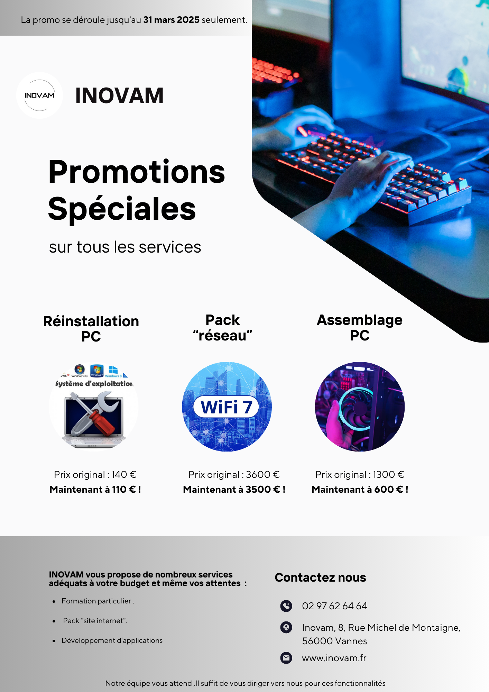
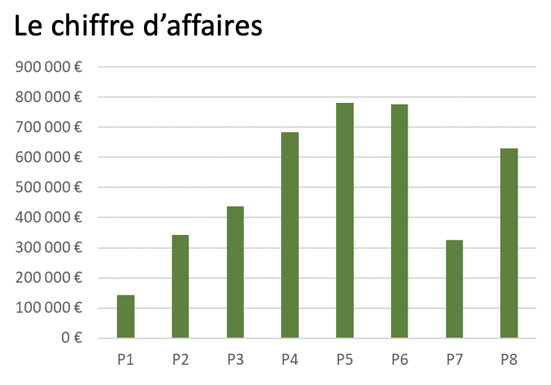
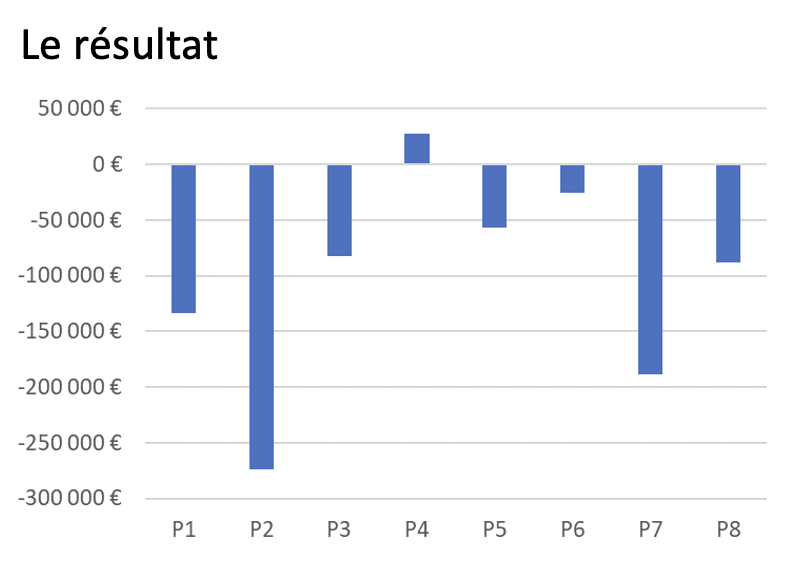
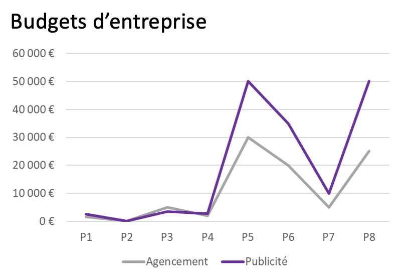

Cette capture d’écran montre le flyer promotionnel que j'ai conçu pour présenter l'entreprise fictive, INOVAM, et ses offres de services lors de la SAÉ. Le flyer met en avant des promotions spéciales, illustrées par des images et des prix attractifs pour attirer l’attention des clients potentiels.
J’ai travaillé sur ce flyer en choisissant des visuels adaptés, en rédigeant un texte marketing clair et en intégrant les informations importantes telles que les contacts, les promotions et les services proposés. J’ai veillé à ce que le design soit à la fois moderne, attirant et professionnel, en utilisant des couleurs cohérentes.
Cette preuve valide la compétence AC 13.02, car j’ai su contextualiser l'offre en la présentant de manière adaptée et pertinente. Elle montre également que j’ai acquis la compétence AC 13.05, car j’ai compris l’importance de la data visualisation et de l’infographie pour rendre l’information plus accessible et compréhensible.
Cette capture d’écran présente un flyer promotionnel réalisé pour la SAÉ. On y voit une mise en page attirante et un message clair qui alerte sur les risques liés aux virus informatiques, réalisé lors d'une étape du projet. Il propose une solution efficace avec la réinstallation du système.
Ce flyer est conçu pour garder la clientèle de l'entreprise et l’informer de manière simple et directe sur l'un des services proposés. Il présente un texte structuré et illustré qui rassure et incite à agir. La mise en forme visuelle est pensée pour renforcer le message et faciliter la lecture.
Cette preuve valide la compétence AC 13.02, car j’ai su contextualiser les données en reliant la prestation proposée au problème concret du virus. Elle valide également la compétence AC 13.05, car j’ai compris l’importance de la data visualisation et de l’infographie pour rendre l’information plus accessible et compréhensible.
Cette capture d’écran présente un graphique en barres montrant le chiffre d’affaires réalisé sur huit périodes différentes (P1 à P8). Chaque barre représente la valeur du chiffre d’affaires pour une période donnée.
Ce visuel est essentiel pour comparer facilement les résultats et identifier les périodes de forte activité (P5 et P6) ainsi que les périodes de faible performance (P1 et P7). La lecture du graphique est facilitée par une échelle bien choisie et une représentation claire des données.
Cette preuve valide la compétence AC 13.03, car j’ai su mettre en évidence des résultats clés grâce à l’utilisation d’indicateurs pertinents et d’un visuel adapté. Elle valide également la compétence AC 13.05, car j’ai compris l’importance de la data visualisation et de l’infographie pour rendre les résultats plus lisibles et plus accessibles.
Cette capture d’écran présente un graphique en barres montrant le résultat net (en euros) réalisé sur huit périodes (P1 à P8). Chaque barre indique un résultat négatif ou positif, permettant de repérer les périodes en déficit et les périodes où le résultat est légèrement positif.
Ce graphique est essentiel pour visualiser rapidement les performances de l’activité et pour identifier les périodes critiques. La présentation claire et la différenciation entre les valeurs négatives et positives rendent la lecture du résultat plus accessible et compréhensible.
Cette preuve valide la compétence AC 13.03, car j’ai su mettre en évidence des résultats clés à travers un visuel clair et pertinent. Elle valide également la compétence AC 13.05, car j’ai compris l’importance de la data visualisation et de l’infographie pour communiquer efficacement les résultats et faciliter la prise de décision.
Cette capture d’écran présente un graphique en courbes permettant de comparer les budgets d’entreprise consacrés à l’agencement et à la publicité au cours des huit périodes (P1 à P8). Chaque ligne permet de suivre l’évolution des dépenses pour ces deux postes budgétaires au fil du temps.
Ce graphique est particulièrement utile pour comparer l’évolution des deux budgets et mettre en évidence les pics de dépenses (P5 et P8 pour la publicité). La différenciation par couleur et le choix d’un graphique en lignes permettent de visualiser clairement les variations d’un budget à l’autre.
Cette preuve valide la compétence AC 13.03, car j’ai su mettre en évidence des résultats clés grâce à l’utilisation d’indicateurs pertinents (courbes et légendes). Elle valide également la compétence AC 13.05, car j’ai compris l’importance de la data visualisation et de l’infographie pour comparer des données et faciliter l’interprétation des résultats.
Excel
Dans cette SAÉ, j’ai participé au jeu TerStrat de Strat&Logic, qui simule la gestion d’une entreprise de services. En tant que gestionnaire virtuel, j’ai été confronté à des décisions stratégiques à prendre à chaque tour, comme le recrutement, l’investissement dans les équipements, la fixation des prix, ou encore la gestion des budgets. L’objectif était d’optimiser les indicateurs de performance de l’entreprise dans un contexte concurrentiel simulé.
J’ai mobilisé la ressource étude des données de l’environnement entrepreneurial et économique (R2.11) pour analyser les tableaux de bord fournis par le jeu, comprendre les mécanismes économiques associés (coût, rentabilité, capacité de production, satisfaction client), et construire une stratégie cohérente à chaque période du jeu.
À l’aide des indicateurs fournis (coût des prestations, rentabilité, temps de réalisation, capacité, parts de marché, etc.), j’ai conçu des tableaux de suivi dans Excel et proposé des ajustements : embauche, choix des équipements à amortir, orientation du budget communication, ou encore analyse du retour sur investissement des études de marché.
J’ai appris à extraire les bons indicateurs, à mettre les données en lien avec les décisions prises, à expliciter les stratégies retenues, et à présenter visuellement les résultats.
Compétences développées :
— AC 13.02 |Identifier l’importance de contextualiser ses données
J’ai su présenter les données de l’entreprise de manière pertinente, en faisant des graphiques et des visuels.
— AC 13.03 |Mesurer l’importance de mettre en évidence des résultats clés par l’utilisation d’indicateurs pertinents
J’ai choisi des graphiques pertinents et des indicateurs précis pour montrer l’évolution du chiffre d’affaires, du résultat et des budgets afin de faciliter la prise de décision.
— AC 13.05 |Comprendre les intérêts de la data visualisation et de l’infographie
J’ai réalisé des supports visuels attirants et pertinents (graphique en barres, courbes, flyers) pour rendre l’information plus accessible et favoriser la compréhension des résultats.
NB : L’AC 13.04 (Lors de la restitution des résultats, mesurer l’importance d’expliciter également la démarche suivie) n’a pas été mobilisé dans ce projet.